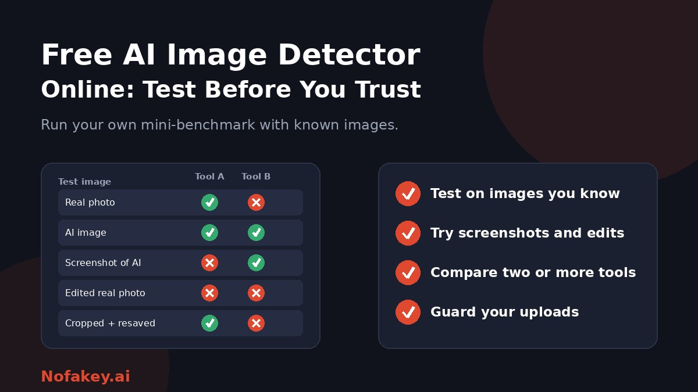

Search for a free AI image detector online and you will find dozens. Almost all promise instant, accurate results with no sign-up. Almost none tell you how often they are wrong. Rather than picking one from a list, you can run a quick test of your own in a few minutes. This guide shows how, what the scores mean, which claims to be sceptical about, and how to protect your uploads.
How these tools work, in plain words
Most free detectors run your image through a machine-learning model trained on examples of real and AI-generated pictures. The model looks for statistical traces, such as texture and pixel patterns, and returns a probability or label. Some also read metadata or content credentials when present. A few analyse specific things, like whether a face looks generated.
Two things follow from this. First, a detector knows only what it was trained on, so it can struggle with generators or editing styles it has not seen. Second, anything that changes the fine detail of an image, such as resizing, compression or a screenshot, can change the result.
Claims to be sceptical about
| Typical claim | Why to be careful |
|---|---|
| "95%+ accuracy" | Usually from the vendor's own test set, which may not look like your images |
| "Detects every generator" | New generators appear constantly, and detectors lag behind |
| "Works on partial edits" | Results on partly edited photos are inconsistent across tools |
| "Instant, no sign-up, completely free" | Free tools may log uploads, limit daily scans or push paid plans. Some apps hide subscriptions after a trial |
| "Works without metadata" | Plausible, but that makes it a statistical guess, so treat it as one |
| A single dramatic percentage | A precise number can look more certain than it is |
Run your own mini-benchmark
You do not need a lab. Gather a small set of images whose origin you know, and see how each tool handles them.
- Collect real photos you took yourself, a mix of people, places, objects and low-light shots.
- Add AI-generated images you made or know about, from more than one generator if possible, and note which.
- Make tricky versions. Take screenshots of AI images, resize and re-save them, crop them, and apply filters. Also edit a real photo lightly, and add an AI-made object to another.
- Run every image through two or three tools, and record the result and the score for each.
- Count the errors in both directions: real images flagged as AI, and AI images that pass.
- Check stability. Re-upload the same file, and a slightly modified copy. Wild swings are a bad sign.
- Decide what the tool is good for. A tool that fails on screenshots may still help with original files, but you should know that.
A very small test cannot give you precise accuracy figures. It can show you where a tool is clearly weak, which is what matters.
How to read a score
| What you see | What it usually means | What to do |
|---|---|---|
| High "AI" score | The image strongly resembles what the model links to AI output | Treat as a warning. Trace the source and look for confirmation |
| Low "AI" score | Nothing flagged, which is not proof of a real photo | Do not relax. Check source and context |
| Middle score | The tool is unsure | Rely on other checks and try another tool |
| Tools disagree | Different models and training data | Do not pick the result you prefer. Dig deeper |
| Error or "unsupported" | File too small, odd format or too compressed | Find a better quality original |
Remember that "80% AI" is the tool's estimate of resemblance. It does not mean an 80% chance that the image is fake. For the broader picture, see are AI detectors accurate?
What affects results most
- Which generator made the image. A detector trained mostly on one family of generators can underperform on others.
- Resizing, compression and screenshots, which remove fine traces.
- Filters and editing, which can make real photos look synthetic and synthetic ones look real.
- Image type. Illustrations, art, product renders and faces are treated differently, and not every tool covers all of them.
- Watermarks and overlays, which can hide texture clues.
- Partial AI edits, which are especially hard to catch.
Protect your uploads
- Read the data policy. Does the tool store images, share them, or use them to train models? Can you delete them?
- Do not upload private, intimate or children's photos. If an image like that is being used to threaten or scam someone, keep the evidence, do not forward it, and report it to the platform and the authorities.
- Be careful with apps. Some "free" detector apps turn into paid weekly subscriptions after a trial. Read the terms before you install.
- Be careful with browser extensions. Install only from official stores and check permissions. An extension that can read every page you visit sees more than the image you wanted to check. See the fake AI browser extension update scam.
- Prefer public links to uploads where the tool allows it.
Beyond a detector: a better workflow
A detector is one layer. A stronger routine is to find the original file, look for content credentials, run a reverse image search, check the context, and then use a detector as a clue. Our guide on how to check if a photo is AI-generated walks through that method, and free online deepfake detector tools covers tools for manipulated faces and video. Newsroom-style steps are in how journalists verify images.
If you publish images
- Label AI-generated images clearly. See how to label AI-generated content.
- Keep your originals and editing records.
- Do not rely on a detector to "prove" your own work is human. A false flag is possible, so keep your process files.
If a link or message that came with an image looks suspicious, paste it into our free checker for a quick first read. It is not an image detector, so use it only for the surrounding message, claim or link.
Conclusion
A free AI image detector can be a useful clue, but only if you know its limits. Test any tool on images you know, including screenshots and edits, compare more than one, read middle scores as uncertain, and protect your uploads. Combine detectors with source and context checks, and treat unverified images as unverified. Find more guides on the Nofakey.ai blog.
Frequently asked questions
Are free AI image detectors accurate?
Accuracy varies by tool, image type and generator. They can be wrong in both directions, and published accuracy claims usually come from the vendor’s own tests. Test any tool yourself on images you know.
What does a confidence score of 80% mean?
It usually means the tool estimates the image resembles AI output. It is not an 80% chance that the image is fake, and scores in the middle range are uncertain.
Can AI image detectors spot partly edited photos?
Some claim to, but results are inconsistent. A real photo with an AI-generated background or object can pass undetected, so tracing the original source matters.
Why does a screenshot or resized image give different results?
Resizing, compression and screenshots remove or change the fine traces detectors rely on, so results can change. Use the highest-quality original you can find.
Is it safe to upload images to a free detector?
Only if you accept the privacy risk. Read the data policy, avoid uploading private, intimate or children’s photos, and be wary of apps that hide subscriptions after a free trial.
Got a suspicious link or message to check?
Run it through the checker